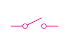
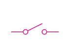

2. Close switch S1, then note the voltmeter reading.
3. Close both switches (S1 and S2) and record the voltmeter reading.
Questions
(a) Compare the voltmeter reading when only S1 is closed and when both S1 and S2 are closed. Explain your results.
(b) What is the e.m.f. of the cell?
(c) What is the potential difference across the bulb?
The voltmeter reading when the current flows through the bulb (when both switches are closed) is less than when no current flows through the bulb (only switch S1 is closed). When no current flows out of the cell or battery, the voltmeter reading is the cell’s e.m.f. When both switches are closed and the current flows through the circuit, the voltmeter reading is the potential difference across the bulb.
Electric circuits and symbols
Circuit diagrams are visual representations of electrical circuits, using circuit symbols to represent electrical components and their connections. You can create these diagrams by placing components and connecting them with lines. These diagrams are crucial for understanding and building electrical circuits. Various IT tools, such as virtual labs and Smart Draw, may assist in developing the skills to construct an electric circuit.
Principles for constructing an electric circuit
When drawing a circuit diagram, follow the following steps.
Voltmeter connection: A voltmeter must be connected in parallel with the component across which the voltage is being measured.